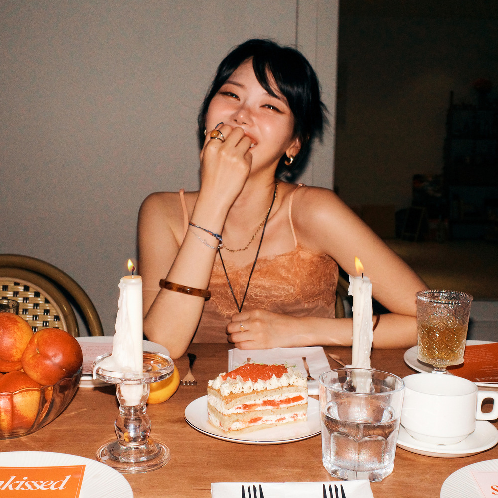

안녕하세요 라보엠입니다. ☕️
아직 겨울이지만 요즘처럼 맑은 하늘이 이어지는 날에는 창문을 활짝 열고 기분 좋은 바람을 맞이하고 싶어지곤 합니다. 화려한 도시의 소음에서 잠시 벗어나, 나만의 작은 테라스에 앉아 나른한 오후를 즐기는 상상, 한 번쯤 해보지 않으셨나요? 오늘은 그런 상상을 현실로 만들어줄 마법 같은 곡, 싱어송라이터 이지카이트(Izykite)의 'PATIO'를 소개해 드리겠습니다.

이지카이트(Izykite) - PATIO: 우리만의 테라스로 떠나는 여행
이지카이트는 2021년 데뷔 이후 독보적인 음색으로 인디 신과 R&B 리스너들 사이에서 꾸준히 사랑받고 있는 아티스트입니다. 본명인 '이지연'에서 '지연'을 영어 'Kite(연)'로 바꾼 활동명만큼이나 그녀의 음악은 자유로우면서도 감각적인 색채를 띠고 있죠. ? 이번에 소개해 드릴 'PATIO'는 2024년 발매된 싱글로, 특유의 나른한 그루브와 세련된 사운드가 돋보이는 곡입니다.
? 음악적 텍스처: 허스키한 보이스와 나른한 그루브
이지카이트의 가장 큰 무기는 단연 '중저음의 매력적인 허스키 보이스'입니다. 'PATIO'에서는 그 강점이 극대화되는데요. 미니멀한 기타 리프와 부드러운 리듬감 위에 얹어진 그녀의 목소리는 마치 공중에 기분 좋게 떠 있는 듯한 부유감을 선사합니다. ? 특히 후렴구의 세련된 멜로디 라인은 K-pop의 감성과 팝적인 세련미가 절묘하게 교차하며 리스너들의 귀를 사로잡습니다.
✍️ 가사의 의미: 찰나의 순간을 영원처럼
'PATIO'는 스페인어로 '중정(테라스)'을 뜻합니다. 가사를 가만히 들여다보면 햇살이 머무는 테라스에 앉아 소중한 사람과 대화를 나누는 장면이 한 폭의 수채화처럼 그려져요. 거창한 약속보다는 "언젠가 이 순간을 돌릴 때 기억해"라는 가사처럼, 다시 오지 않을 지금 이 순간의 공기와 온도를 소중히 간직하자는 메시지를 담고 있습니다. 바쁜 일상 속에서 잠시 숨을 고르게 하는 다정한 위로가 느껴지는 대목이죠. ✨
맺음말 - 이 노래, 언제 들으면 좋을까요?
저는 이 곡을 '해 질 녘, 따뜻한 차 한 잔과 함께 아무것도 하지 않을 때' 가장 추천드려요. ? 하루의 끝을 알리는 황금빛 노을이 방 안으로 깊숙이 스며들 때 'PATIO'를 틀어놓으면, 평범했던 내 방이 세상에서 가장 아늑한 휴식처로 변하는 마법을 경험하실 수 있을 거예요.
이지카이트의 목소리는 과하게 감정을 강요하지 않아요. 그저 담담하게 곁에 머물며 마음을 환기해주죠. 이번 주말, 여러분만의 '테라스'에서 이 노래와 함께 조용한 여유를 만끽해보시는 건 어떨까요? 음악과 함께하는 여러분의 시간이 언제나 따뜻하기를 바랍니다. ?
'MUSIC. > K-pop.' 카테고리의 추천 글
놓치면 안될 2025 국내 인디 음악 5곡 추천
안녕하세요 라보엠입니다.2025년, 스트리밍 시대에도 인디음악은 그 어느 해보다 깊고 풍부하게 다가오고 있습니다. 감성의 결이 살아있는 신작들, 독창적인 아티스트의 성장, 우리 삶의 순간을
umm.la-bohe.me